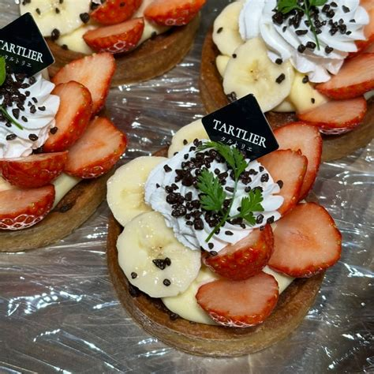
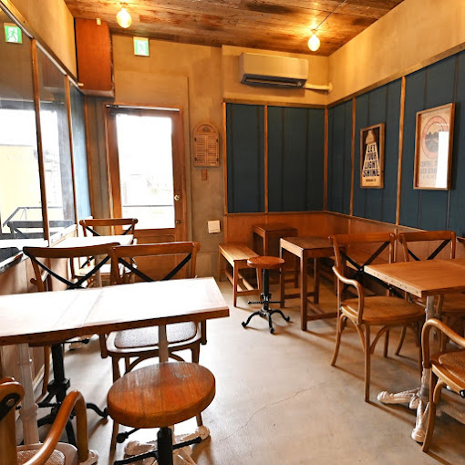
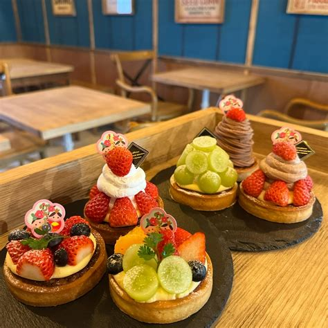
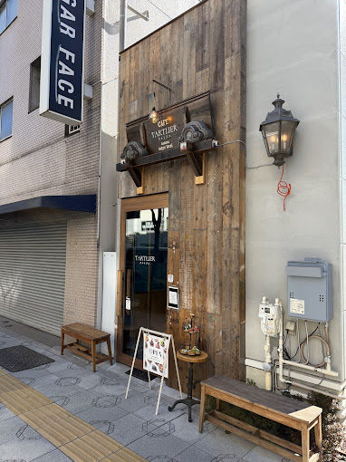
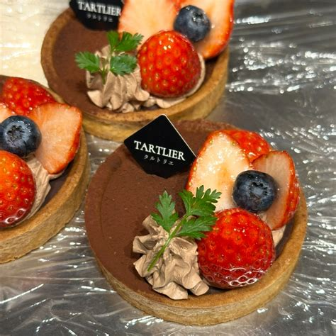
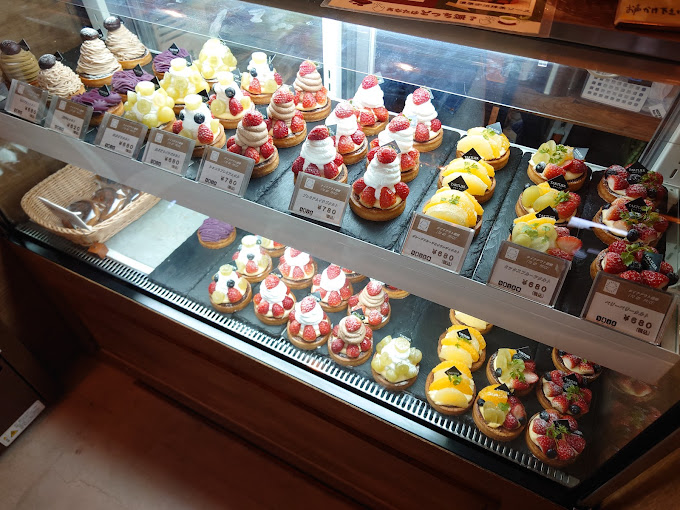
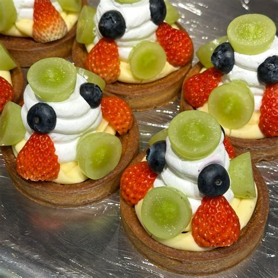
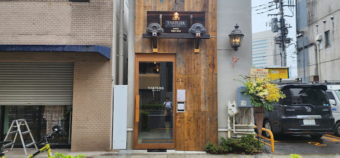
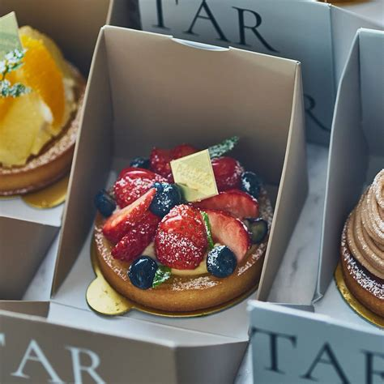
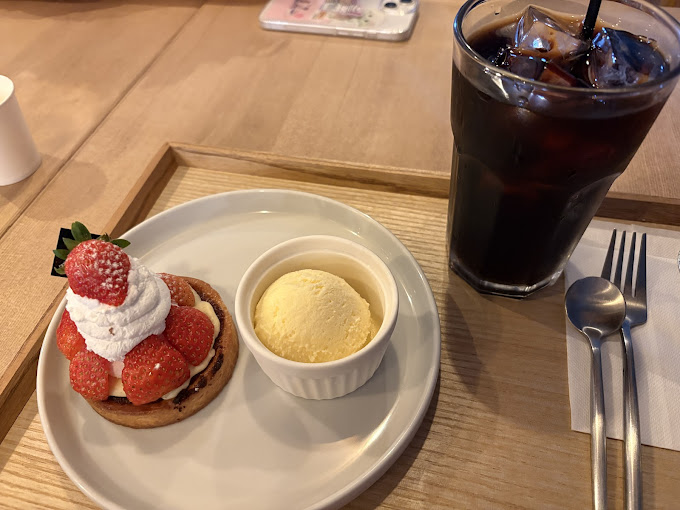

Infos pratiques / Restaurants / Tokyo / Tartlier Riverside Asakusa
Tartlier Riverside - Asakusa
Adresse cafe / patisserie au bord de l eau a Asakusa, pratique pour un brunch, une pause sucree ou un moment plus calme en journee.
Galerie photos










Résumé
Tartlier Riverside fonctionne surtout comme pause gourmande a Asakusa : cadre plus doux, vues bord de riviere et format simple en journee.
Infos clés
- Nom : Tartlier Riverside Asakusa
- Adresse : 1-12-14 Hanakawado, Taito-ku, Tokyo, Japon
- Téléphone : 03-5830-3558
- Accès : env. 3 min d Asakusa Station selon Hitosara
- Horaires observés : 10:00 - 20:00 (L.O. 19:00) selon Hitosara
- Style : cafe, tartes, desserts, brunch, pause
- Réservation : non confirmee dans les sources consultees
Pourquoi on le met au programme
- Bonne pause entre deux visites a Asakusa.
- Le cadre change des izakaya et grillades du reste du voyage.
- Pratique pour un moment plus leger en journee.
Prix (JPY / EUR)
- Repere Tabelog observe : 1,000 - 1,999 JPY ≈ 5.44 - 10.88 EUR
- Lecture pratique : le total depend du nombre de tartes, boissons et formules choisies
Conversion indicative sur base 1 EUR = 183.67 JPY (BCE, 10/03/2026).
Conseils famille (5 personnes)
- A garder pour une pause de jour, pas pour un gros diner.
- Pratique si vous voulez separer un moment dessert / cafe du repas principal.
- Asakusa peut etre tres charge : gardez l adresse exacte.